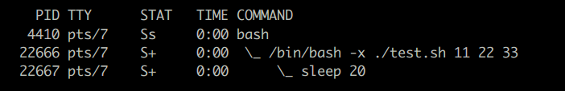

#!
shebang ( 또는 sharpbang, shabang, hashbang ) 라인은 스크립트 파일의 첫줄에 사용하여 스크립트가 어떤 명령에 의해 실행될지를 지정합니다. 프로그램의 경로는 절대경로나 현재 디렉토리로부터 상대경로를 사용할 수 있으며 변수는 사용할 수 없습니다. 그리고 shebang 라인에서 사용할 수 있는 옵션은 하나로 제한됩니다.
#! /bin/bash # bash 스크립트 실행을 위한 shebang line
...
#! /bin/sed -f # sed 스크립트 실행을 위한 shebang line
...
#! /usr/bin/awk -f # awk 스크립트 실행을 위한 shebang line
...
#! /usr/bin/perl # perl 스크립트 실행을 위한 shebang line
...
#! /usr/bin/python # python 스크립트 실행을 위한 shebang line
...
#! /usr/bin/node # nodejs 스크립트 실행을 위한 shebang line
...
#! /usr/bin/dart # dart 스크립트 실행을 위한 shebang line
...
#! /usr/bin/make -f # make 파일도 하나의 명령으로 실행할 수 있다.
...
#! 문자는 텍스트 파일을 바이너리 실행파일처럼 실행할 수 있게 해주는 역할을 합니다.
OS 가 실행 퍼미션이 설정된 파일을 실행할 때 처음에 #! 문자를 만나면 뒤에 이어지는 나머지 라인을 해당 파일을 실행하기 위한 인터프리터로 취급합니다.
그러므로 가령 foo 라는 이름의 실행파일이 있고 첫줄이 #!/bin/sed -f 로 시작한다면 프롬프트 상에서 foo arg1 arg2 명령을 실행할 경우 실제로는 /bin/sed -f foo arg1 arg2 와 같이 실행되게 됩니다.
다음은 #!/bin/bash -x shebang 라인을 갖는 test.sh 스크립트를 실행했을 때 ps 입니다.

다음 hello 파일은 #! /bin/more shebang 라인을 가지므로 실행시 /bin/more hello
와 같이 실행되어 자기 자신의 내용을 프린트합니다.
$ cat hello
#! /bin/more
hello
shebang
line
$ chmod +x hello
$ ./hello
#! /bin/more
hello
shebang
line
shebang 라인 무시하기
다음과 같이 직접 bash 명령을 이용해 실행하면 shebang 라인이 무시되고
bash -m 에 의해 스크립트 파일이 실행됩니다.
( shebang 라인은 bash 에의해 주석으로 처리되겠죠 )
# -m ( monitor )
$ bash -m script.sh
shebang 라인에 주석이 있으면 오류가 됩니다.
$ cat test.sh
#!/bin/bash -e # errexit 옵션 설정
echo 111
$ ./test.sh
/bin/bash: - : invalid option
Portability
shebang 라인에 #!/usr/bin/env 를 사용하는 경우를 본적이 있으실 겁니다.
이와 같이 사용하는 이유는 OS 별로 프로그램의 위치가 다를 수 있기 때문인데요.
가령 python 프로그램은 /usr/bin/python 에 위치할 수도 있고 /usr/local/bin/python 에 위치할 수도 있습니다.
이럴경우 특정 OS 에서는 shebang 라인을 수정해서 사용해야 합니다. 하지만 #!/usr/bin/env python 와 같이 사용하면 $PATH 를 검색해서 python 프로그램을 실행하게 되므로 문제를 해결할 수 있습니다.
또한 shebang 라인에는 -f 와 같은 명령 옵션을 하나밖에 사용할 수 없는데
env 의 -S 옵션을 사용하면 여러 개의 옵션을 사용할 수 있습니다.
$ cat test1
#!/usr/bin/env -S gawk -v AA=100 -f
BEGIN {
print "AA : " AA
}
$ ./test1
AA : 100
--------------------------------------
$ cat test1
#!/usr/bin/gawk -v AA=100 -f # env 를 사용하지 않을 경우 오류 발생
BEGIN {
print "AA : " AA
}
$ ./test1
gawk: fatal: ' AA' is not a legal variable name
다음은 rev 명령과 동일한 기능을 하는 스크립트를 emacs lisp 으로 작성해 실행하는 예입니다.
$ cat rev.sh
#!/usr/bin/env -S emacs -Q --script
(defun process ($str)
(concat (nreverse (string-to-list $str))))
(condition-case nil
(let ($line)
(while (setq $line (read-from-minibuffer ""))
(princ (process $line))
(princ "\n")))
(error nil))
---------------------------------------------------
$ ./rev.sh <<< 123456789 $ rev <<< 123456789
987654321 987654321
$ ./rev.sh < /etc/hosts $ rev < /etc/hosts
tsohlacol 1.0.0.721 tsohlacol 1.0.0.721
kooBetilE 1.1.0.721 kooBetilE 1.1.0.721
. . . . . . . .
guile scheme 은 #! ... !# 가 주석이므로 다음 라인에 !# 를 추가해야 합니다.
$ cat test2
#! /usr/bin/env -S guile --no-auto-compile -e main -s
!#
(define (main args)
(display "1 ")
(display (call/cc (lambda (continuation)
(display "2 ")
(continuation "3 ")
(display "foo ")
)))
(display "4 ")
)
$ ./test2
1 2 3 4
java 는 버전 11 부터 .java 소스파일을 직접 실행할 수가 있습니다.
$ cat test3
#!/usr/bin/env -S java --source 20
import java.util.Scanner;
public class Hello {
public static void main(String[] args) {
long total = 0;
Scanner input = new Scanner(System.in);
while (input.hasNextLine())
total += Integer.parseInt(input.nextLine());
System.out.println("Total : " + total);
}
}
$ seq 10 | ./test3
Total : 55
다음은 nodejs 스크립트를 실행합니다.
$ cat test4
#!/usr/bin/env node
process.stdin.setEncoding('utf8');
let tmp = "";
let total = 0;
process.stdin.on('data', (chunk) => { // 블록단위 chunk 로 입력되므로
const lines = chunk.split("\n"); // 블록 끝부분의 라인이 잘릴수 있으므로
lines[0] = tmp + lines[0]; // 이어주는 작업을 해줘야한다.
tmp = lines.pop();
lines.forEach((line) => total += parseInt(line));
});
process.stdin.on('end', () => console.log("Total : " + total));
$ seq 10 | ./test4
Total : 55
다음은 Dart 언어 스크립트를 실행합니다.
$ cat test5
#!/usr/bin/env dart
import 'dart:io';
import 'dart:convert';
void main() async {
int total = 0;
await stdin.transform(utf8.decoder).transform(const LineSplitter())
.forEach((line) { total += int.parse(line); });
print("Total : $total");
}
$ seq 10 | ./test5
Total : 55
다음은 Julia 언어 스크립트를 실행합니다.
$ cat test6
#!/usr/bin/env julia
let v = Int[]
for line = eachline()
push!(v, parse(Int, line))
end
println("Total : ", sum(v))
end
$ seq 10 | ./test6
Total : 55
스크립트 파일에는 set uid 를 설정할 수 없습니다.
프로그램을 root 권한으로 실행하게 만들수 있는 set uid 설정을 shell script 에 적용할 경우 보안과 관련해서 많은 문제가 생길 수 있다고 합니다. 그리고 shell script 은 기본적으로 명령들을 다루기 때문에 어떤 명령이 보안과 관련해서 버그가 있을 경우 바로 문제로 이어질 수 있습니다.
shebang line 을 쓰지 않아도 될 때
스크립트 파일을 직접 명령으로 실행시킬 때 외에는 shebang line 을 쓰지 않아도 됩니다. source 명령으로 읽어들이는 스크립트들, ~/.bashrc , ~/.profile 같은 환경설정 파일들, 명령 자동완성 함수를 작성할 때 등등 ...
Quiz
python 스크립트 파일을 실행하려고 하는데 python 실행 파일이 특정 디렉토리에 여러 군데 위치할 수가 있습니다. 이럴 때는 어떻게 실행할 수 있을까요?
다음과 같이 하면 먼저 shell 스크립트가 실행된 후에 python 스크립트가 실행되게 할 수 있습니다.
약간 tricky 한 부분이 ":"'''' 인데 shell 에서는 이 라인이 실행될 때
quotes 이 모두 제거되고 나면 : 명령 라인이 됩니다.
이어지는 shell 스크립트가 실행이 되고 최종 선택된 python 실행파일이 exec 에 의해
실행되면 python 에 의해 다시 foo.py ( $0 ) 파일이 실행됩니다.
python 에의해 실행될 때는 # 문자로 시작하는 shebang 라인은 주석으로 인식이 되고
":"'''' ~ ''' 까지는 단순 스트링, 주석 으로 인식이 돼서
무시가 되므로 이후에 print 문부터 실제 python 스크립트가 실행되게 됩니다.
$ cat foo.py
#!/bin/sh
":"''''
PREFERRED_PYTHON=/Library/Frameworks/Python.framework/Versions/3.6/bin/python
ALTERNATIVE_PYTHON=/Library/Frameworks/Python.framework/Versions/2.7/bin/python3
FALLBACK_PYTHON=python3
if [ -x "$PREFERRED_PYTHON" ]; then
echo "Using preferred python $PREFERRED_PYTHON"
exec "$PREFERRED_PYTHON" "$0" "$@"
elif [ -x "$ALTERNATIVE_PYTHON" ]; then
echo "Using alternative python $ALTERNATIVE_PYTHON"
exec "$ALTERNATIVE_PYTHON" "$0" "$@"
else
echo "Using fallback python $FALLBACK_PYTHON"
exec "$FALLBACK_PYTHON" "$0" "$@"
fi
'''
print("Running python script...")
import platform
print(platform.python_version())
$ ./foo.py
Using fallback python python3 <---- sh 스크립트 메시지
Running python script... <---- python 스크립트 메시지
3.9.5
다음은 Go 언어용 shebang 라인입니다.
Go 언어 에서는 # 문자로 시작하는 라인이 주석으로 인식되지 않기 때문에
#! 로 시작하는 shebang 라인은 사용할 수가 없습니다.
실행파일에 shebang 라인이 없을 경우는 기본적으로 shell 에의해 실행이 됩니다.
따라서 ///bin/true 라인이 shell 에의해 실행될 때는 /bin/true 명령으로
인식이 돼서 실행이 되고 이후에 exec 에의해 go run foo.go 가 실행됩니다.
go 에의해 foo.go 파일이 실행될 때는 ///bin/true 라인은 // 문자로 시작하는
주석 라인이 되므로 오류 없이 실행이 됩니다.
Go 언어는 compiled 언어이므로 go run 에 의해 실행될 때는 먼저 compile 이 완료된 후에 실행되게 됩니다.
$ cat foo.go
///bin/true; exec go run "$0" "$@"
package main
import "os"
func main() {
println("Hello World!")
os.Exit(3)
}
$ chmod +x foo.go
$ ./foo.go # go 언어는 파일에 확장자가 있어야 한다.
Hello World!
# .go 확장자 없이도 실행이 가능하게 하려면 다음 shebang 라인을 사용하면 됩니다.
///bin/true; exec bash -c 'cmd="'"${0##*/}"'" cur="'"$PWD"'" && cd `mktemp -d -p /dev/shm 2>&1` && trap "rm -rf '\''$PWD'\''" 0 && { go mod init "$cmd" && cp "$cur/'"$0"'" main.go && go mod tidy && go build ;} &>/dev/null && cd "$cur" && "$OLDPWD/$cmd" "$@"' x "$@"
다음은 rust 언어용 shebang 라인입니다.
# 명령 실행중에 비정상 종료될 경우에도 temp 디렉토리가 삭제되려면 trap 을 설정해야 합니다.
$ cat foo.rs
///bin/true; exec bash -c 'cmd="'"${0##*/}"'" cmd=${cmd%.*} cur="'"$PWD"'"; cd `mktemp -d -p /dev/shm 2>&1` && trap "rm -rf '\''$PWD'\''" 0 && { cargo new "$cmd" && cd "$cmd" && cp -f "'"$PWD/$0"'" src/main.rs && cargo build --release ;} &>/dev/null && cd "$cur" && "$OLDPWD/target/release/$cmd" "$@"' x "$@"
use std::{env, process};
fn main() {
for (index, argument) in env::args().enumerate() {
println!("arg {}: {}", index, argument);
}
process::exit(3);
}
$ chmod +x foo.rs
$ ./foo.rs 10 20 30
arg 0: /dev/shm/tmp.b6gHYP3XMo/foo/target/release/foo
arg 1: 10
arg 2: 20
arg 3: 30
$ echo $?
3
-----------------------------------------------------
# cargo install cargo-script 설치하면 다음과같이 좀더 쉽게 실행할수 있습니다.
$ cat bar.rs
#!/usr/bin/env run-cargo-script
// cargo-deps: foo="1.0.0", bar="2.1.1" # 의존성 추가도 가능
fn main() {
. . .
다음은 C 언어용 shebang 라인입니다
$ cat foo.c
///bin/true; exec bash -c 'cmd="'"${0##*/}"'" cur="'"$PWD"'"; cd `mktemp -d -p /dev/shm 2>&1` && trap "rm -rf '\''$PWD'\''" 0 && gcc -Wall -lm -xc "$cur/'"$0"'" -o "$cmd" && cd "$cur" && "$OLDPWD/$cmd" "$@"' x "$@"
#include <stdio.h>
int main(int argc, char *argv[]) {
for (int i = 0; i < argc; i++)
printf ("arg %d: %s\n", i, argv[i]);
return 3;
}
$ chmod +x foo.c
$ ./test.c foo bar zoo
arg 0: ./dev/shm/tmp.0laVJsEp3B/foo.c
arg 1: foo
arg 2: bar
arg 3: zoo
$ echo $?
3
1. bash -c 'cmd="'"${0##*/}"'" cur="'"$PWD"'";
홈 디렉토리에서 bar/foo.c 와 같이 실행했다면 $0 변수값이 bar/foo.c 가 되므로
cmd 변수값은 foo.c 가 되고 cur 변수값은 홈 디렉토리 /home/mug896 가 됩니다.
2. cd `mktemp -d -p /dev/shm 2>&1` &&
/dev/shm 에 임시 디렉토리(tmp.NQQCen4TR4) 를 만들고 cd 에 성공하면
( 2>&1 는 mktemp 명령이 실패할경우 오류메시지를 전달하여 cd 명령이 실패하게 한다 )
3. trap "rm -rf '\''$PWD'\''" 0 &&
가장 먼저 현재 디렉토리 전체를 삭제하는 EXIT trap 을 설정합니다.
4. gcc -Wall -xc "$cur/'"$0"'" -o "$cmd" &&
/home/mug896/bar/foo.c 를 소스파일로 해서 /dev/shm/tmp.NQQCen4TR4 디렉토리에
foo.c 실행파일을 생성합니다.
5. cd "$cur" && "$OLDPWD/$cmd" "$@"' x "$@"
current working 디렉토리를 다시 기존의 /home/mug896 로 변경한 후
(현재 디렉토리를 기준으로 파일을 open 할수 있으므로)
gcc 로 생성한 /dev/shm/tmp.NQQCen4TR4/foo.c 실행파일을 전달한 인수와 함께 실행합니다.
shebang 라인에서 사용된 스크립트에 대한 자세한 설명은 책 전반에 걸쳐 나옵니다.
2 .
Shebang 라인에 #!/bin/sh - 와 같이 - 문자를 붙이는 경우가 있는데 왜 그럴까요?
grep 명령을 이용해 --bar 스트링을 찾기 위해 grep --bar 와 같이 실행하면
- 문자에 의해 --bar 가 grep 명령의 옵션으로 인식이 돼서 정상적으로 실행이 되지 않죠.
따라서 이때는 grep -- --bar 와 같이 --bar 앞에 옵션의 끝을 나타내는 -- 를 붙여줍니다.
같은 이유로 만약에 #!/bin/sh 로 실행할 스크립트 파일의 경로명 앞에
- 또는 + 문자가 존재하게 되면 sh 의 옵션으로 인식이 될 수가 있습니다.
$ head -n1 /bin/zcat
#!/bin/sh
$ mkdir +
$ ln -s /bin/zcat +/
$ +/zcat # /bin/sh +/zcat 와 같이 실행되므로 오류가 된다.
/bin/sh: 0: Illegal option -/
bash 와 sh 명령은 end of options 문자로 -- 와 - 를 둘다 사용할수 있습니다.